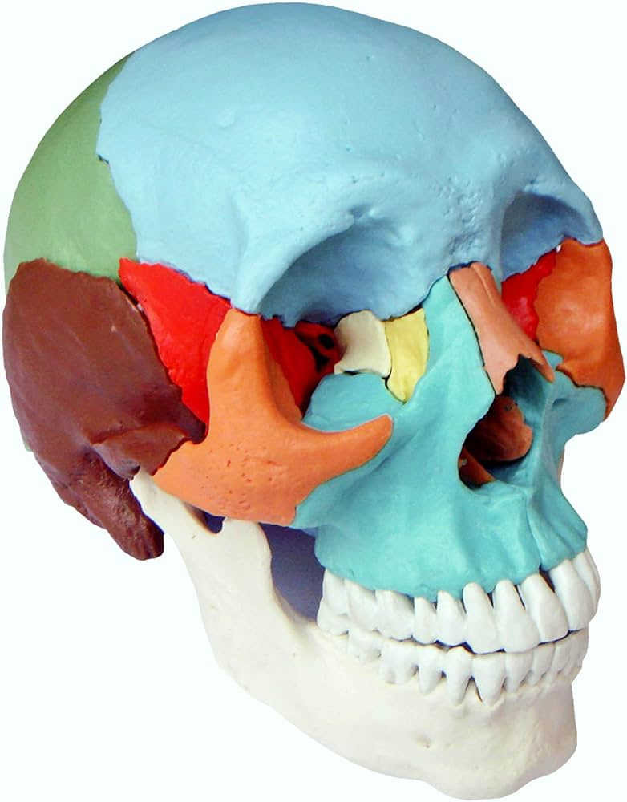

Mapa Craneal Interactivo

Haz clic en cualquier área del cráneo para ver información detallada
Huesos Craneales
-
Hueso FrontalForma la frente y las órbitas oculares
-
Hueso ParietalForma los lados y la bóveda del cráneo
-
Hueso TemporalContiene los órganos de la audición y el equilibrio
-
Hueso EsfenoidesHueso complejo en forma de mariposa en la base del cráneo
-
Hueso OccipitalForma la parte posterior e inferior del cráneo
-
MandíbulaEl hueso más grande y fuerte de la cara
-
Huesos NasalesForman el puente de la nariz
-
Hueso MaxilarForma la mandíbula superior y sostiene los dientes